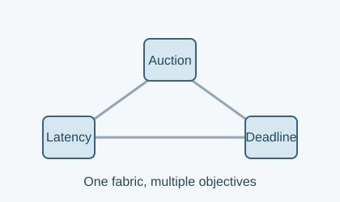
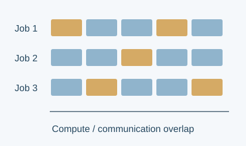
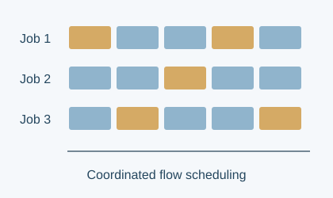

Massachusetts Institute of Technology
PhD in Electrical Engineering and Computer Science
Advisor: Prof. Manya Ghobadi
I’m a PhD student in Electrical Engineering and Computer Science at MIT, advised by Prof. Manya Ghobadi. My research focuses on efficient systems for machine learning, spanning accelerator performance modeling, distributed training, datacenter networking, and shared-memory systems.
Previously, I worked on silicon design at Google and studied electrical engineering at IIT Bombay. I am a recipient of the MIT Jacobs Presidential Fellowship.
* Equal contribution.

arXiv · 2026Sanjoli Narang, Anup Agarwal, Venkat Arun, and Manya Ghobadi
arXiv preprint, 2602.10252.
NSDI ’27Sanjoli Narang*, Anton Zabreyko*, Sudarsanan Rajasekaran, and Manya Ghobadi
Accepted at NSDI 2027.
HotNets ’24Sudarsanan Rajasekaran, Sanjoli Narang*, Anton Zabreyko*, and Manya Ghobadi
HotNets 2024.Anuraag Arya et al.
Journal of Astrophysics and Astronomy.Varun Bhalerao et al.
Experimental Astronomy 57, 23.Varun Bhalerao et al.
Experimental Astronomy 57, 24.Sanjoli Narang and Siddharth Tallur
Review of Scientific Instruments 93(3):035003.Sanjoli Narang and Siddharth Tallur
IEEE EFTF/IFCS 2021.Sanjoli Narang, Aditya Harakare, Nayan Barhate, Andrews Varghese, Aayush Shrivastava, and Ayushi Gupta
IEEE EFTF/IFCS 2021.Predicting and optimizing TPU performance
A CPU-based predictor that combines compiler schedules with analytical compute, memory, and communication models, without hardware profiling. Its guidance connects performance bottlenecks to source and configuration changes.
1.3–24.6× measured training throughput gains across six language models from guided optimizations.
Systalyze · Summer research internship
Coordinating communication through congestion control
Distributed congestion control overlaps DNN communication with computation. Linux kernel modules and random-restart annealing help training jobs find better communication schedules.
Up to 1.9× mean and 2.7× tail training iteration speedups for ML-DCQCN over DCQCN on a 12-GPU testbed; tail denotes the 99th percentile.
MIT · With Prof. Manya Ghobadi
One network, multiple performance objectives
A market-based scheduler combines P4/Tofino auctions with Linux TCP/eBPF bidding agents and dynamic-programming policies to support heterogeneous network objectives.
Up to 6× lower deadline miss rates than NDP in packet-level simulations.
MIT · With Prof. Venkat Arun and Prof. Manya Ghobadi
Rack-scale cache coherence beyond RDMA
A CXL proxy architecture brings coherent shared memory across hosts while preserving ordinary load/store access. A custom latency simulator evaluates the architecture and its tradeoffs.
Up to 6× lower average latency than Pilaf in simulations of skewed, read-heavy workloads.
MIT · With Prof. Manya Ghobadi
PhD in Electrical Engineering and Computer Science
Advisor: Prof. Manya Ghobadi
MS in Electrical Engineering and Computer Science
BTech in Electrical Engineering with Honors; minor in Computer Science
At IIT Bombay, I analyzed MCMC methods and convergence for PageRank with Prof. Vivek S. Borkar, and implemented PCA on low-precision data with Prof. Animesh Kumar, preserving classification accuracy with 4× lower memory use.
TPU performance modeling and ML workload optimization.
System-on-chip microarchitecture for interrupt handling and debug tracing.
Optical sensing using guided acoustic-wave Brillouin scattering.
FPGA hardware modeling for spectrometer data acquisition.
Overall design lead for remotely operated underwater vehicles.
MIT Jacobs Presidential Fellowship · Ramesh Chandra Sinha Academic Excellence Award (highest-ranked female undergraduate, IIT Bombay Class of 2021) · Undergraduate Research Excellence Awards URA-01 and URA-02 · IEEE EFTF-IFCS 2021 Best Student Paper Finalist.